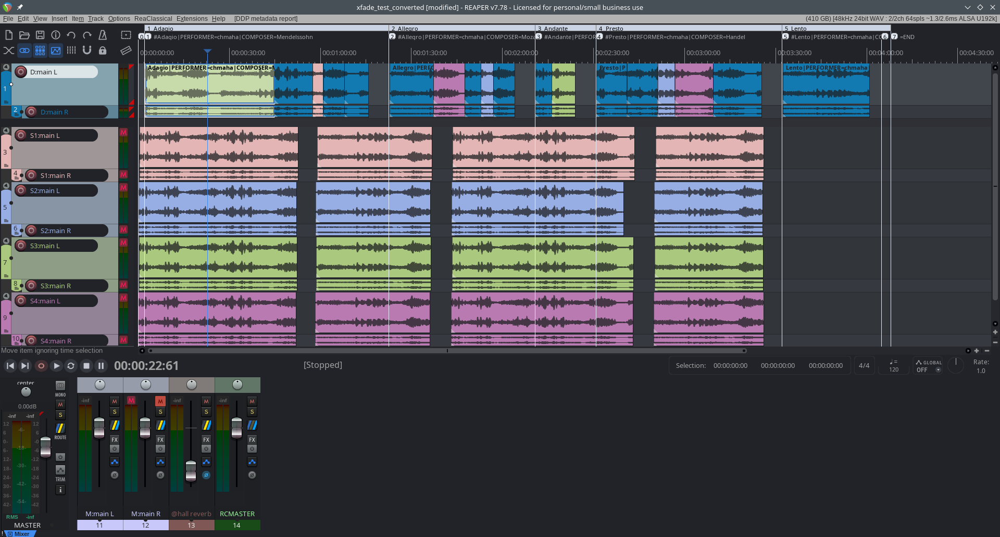
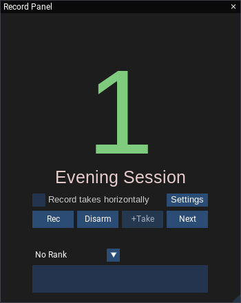
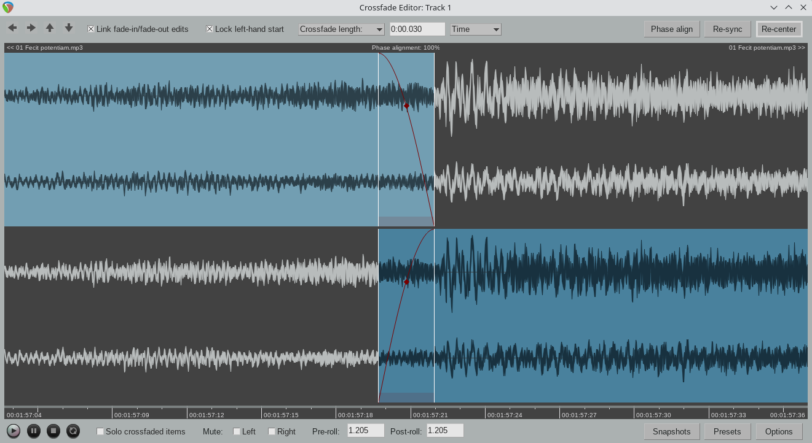
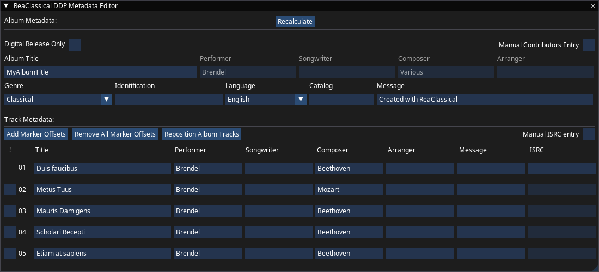

Classical Music Production Start to Finish
A complete recording, editing, mixing and mastering solution for classical music engineers, built on REAPER. Every feature is fully available to blind engineers, for an experience equal to that of sighted users.
ReaClassical 27 · free and open source · GPLv3

The Workflow Classical Engineers Expect, coupled with the speed and reliability of REAPER
Source-destination editing, take-aware recording and album-ready mastering, all built on REAPER.
2-, 3- and 4-point S-D editing
Set destination and source markers on any folder and make the edit with a single key. Anywhere to anywhere, including time-stretched edits and 3-point inserts.
Every microphone edited together
Edits land across all the tracks of a folder at once, so your main pair, spots and ambience always stay in phase and in step.
Two-lane crossfade editor
See the ghost waveforms either side of the join and align transients. Audition the crossfade, the left item or the right item with a mouse hover and a single key, then shuttle to the next edit.
Crossfade protection and healing
Existing crossfades under your markers are consumed automatically, so re-editing from alternative takes leaves no debris. Heal a patch edit to restore the material underneath.
Horizontal or vertical workflow
Arrange takes left to right in a single folder, or stack takes of similar material vertically. Choose what suits the project, and convert between the two later from Mission Control.
DDP & album mastering
Edit all album and CD-Text metadata in one window, with ISRC and EAN/UPC validated. The CUE file, CD-Text and HTML album report update automatically with every change, and a DDP image is a click away.
From the Session to the Finished Album
One connected workflow, with horizontal or vertical track layouts to suit the way you work.
Record
Built around how classical sessions actually run.
- Record Panel with session names, automatic take numbers, plus rankings and notes added while recording
- Distribute every take so far to musicians or the producer as WAV, FLAC, Opus or MP3, without leaving the session
- Control recording from a phone or tablet over the local network
- Listenback track for talkback from the performers; live bounce of the rough mix as you record
- Overdub with an edited mixdown as the guide track

Import and Edit
Precise classical editing, anywhere to anywhere.
- Smart Import of other engineers' files by track name and take number, or rebuild a layout from an existing DDP
- Audition any folder, track or bus under the mouse cursor with one key
- Source Audition Manager: set several source in/out pairs for the same passage and compare them quickly
- Heal a patch edit to restore the material underneath
- S-D edit between project tabs

Mix, Master, Deliver
Album-ready output without leaving your DAW.
- DDP, CUE, BIN+CUE and album reports, with ISRC and EAN/UPC validated for you
- Reorder or reposition album tracks with a keystroke; gaps are preserved
- Automatic room tone that crossfades into and out of the album fades
- Mixer Snapshot Manager: scenes that recall automatically at the right moment in the project
- Peak and overs check, a CD Player and Transition Review for checking every join
- Fast offline loudness and peak checks with dry-run rendering
- Render at 44.1 to 192 kHz with 16, 24 or 32-bit float and a choice of dither

And Much More
Details that save time on every project.
Mission Control
Name tracks, set record inputs, add aux, submix, room tone, reference, listenback and live bounce tracks and adjust routing, all from one window.
Robust take recording
Take numbers are read from the files already on disk, and a number lower than the highest found is refused, so takes cannot clash. Switch session names freely, and add rankings and notes as you record.
Distribute takes on location
Hand every take recorded so far to the musicians or the producer without leaving the session. Each take becomes a region, rendered through the mixer as WAV, FLAC, Opus or MP3 into a folder named for the format and settings, so earlier exports are never overwritten.
Mixer snapshot scenes
Capture the mixer (faders, pan, mute, solo, FX, sends and routing) at any item, and ReaClassical recalls each scene automatically in the gaps during playback. Convert to real automation before rendering.
Automatic room tone
Build endless room tone from a few seconds of your venue with the included template. ReaClassical trims it to the album and adds automation that dovetails with the album fades, crossfading into room tone and back without any fuss.
Mastering-Grade Plugins
Original and ported DSP for transparent classical mastering: EBU R128 and K-metering with true peak, goniometer and spectrum analysis, a precise EQ, compressors, a true-peak limiter, a spectral compressor, de-essers, a Zita-Rev1 reverb and an original Dynamic Tilt EQ.
Fast navigation
Whole-project views, jump to a time, move between takes, edits and markers, and a dedicated S-D editing toolbar, all from the keyboard.
Edit across project tabs
Keep one project tab per movement or session and S-D edit between tabs, with source markers preserved to make undo and re-apply quick.
Truly cross-platform
Ready-made builds for ten operating system and architecture combinations: Windows (x64, x86, ARM64), macOS (Apple silicon, 64-bit and 32-bit Intel) and Linux (x86_64, i686, aarch64, armv7l, including Raspberry Pi).
Accessible by Design
Blind and low-vision engineers get a fully equal experience. They can carry out a complete classical production, from creating a project through recording, editing, mixing, mastering and rendering, using only the keyboard and a screen reader.
Clara, our accessibility bridge
Clara is a massively stripped-down fork of OSARA, the open-source accessibility extension for REAPER, keeping just the announcements and a few essentials. Maintained by the developer of ReaClassical and installed from inside it, it speaks the take number, timeline position and result of every edit through your screen reader. Windows and macOS.
Keyboard-driven windows
Mouse-driven windows such as Mission Control, Preferences and the DDP Metadata Editor open as keyboard-driven accessible windows, with a shortcut list one keypress away.
A complete guide
The manual has a dedicated Accessibility part that follows the whole production, chapter by chapter, written for screen reader users. Not using a screen reader? The keyboard shortcuts are a very fast way for sighted engineers to work too.
Free and Open Source
The complete ReaClassical suite, free to download, use and modify, with no account or activation.
What you get
- Complete End-to-End Classical Music Engineering Solution
- Released under the GNU General Public License v3 (GPLv3)
- No Account or Activation
- Works Fully Offline
- Your Projects Open in regular REAPER
- Install on as Many Machines as You Like
- Community Support on the REAPER Forum
ReaClassical does not include a REAPER license: once the REAPER evaluation period ends, you buy that separately from Cockos. The source is on GitHub. See the Terms and Privacy pages.
Download ReaClassical
Get started on your platform. The script downloads the REAPER version ReaClassical was tested with, the ReaClassical resource folder and the right plugins for your system, and sets everything up in a self-contained folder. Nothing is installed system-wide.
MacOS
Open a terminal and paste the following:
curl --proto '=https' --tlsv1.2 -sSf https://reaclassical.com/macos | sh
View the install script before you run it.
Windows
Open a PowerShell instance and paste the following:
irm "https://reaclassical.com/win" | iex
View the install script before you run it.
Linux (including Raspberry Pi)
Open a terminal and paste the following:
curl --proto '=https' --tlsv1.2 -sSf https://reaclassical.com/linux | sh
View the install script before you run it.
Resources & Support
Everything you need to get started and master ReaClassical.
Online Manual
Comprehensive documentation covering every feature and workflow.
Support & Discussion
Ask questions and report problems on the REAPER forum. Include your operating system and the support info from Shift+F1 in ReaClassical.
Source Code
Browse the source on GitHub, released under the GPLv3.
Support Development
ReaClassical is free and developed by one person. If it helps your work, a donation through PayPal is very much appreciated.